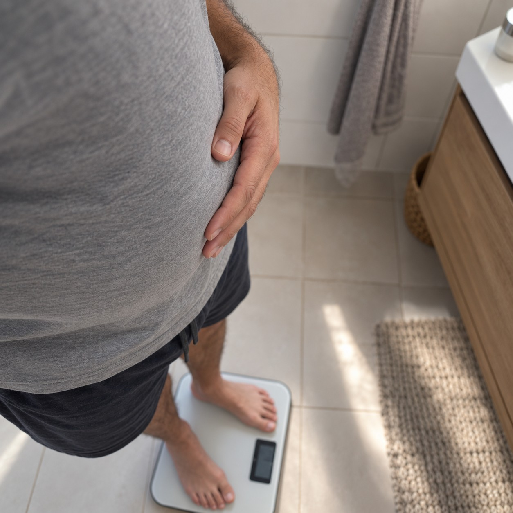
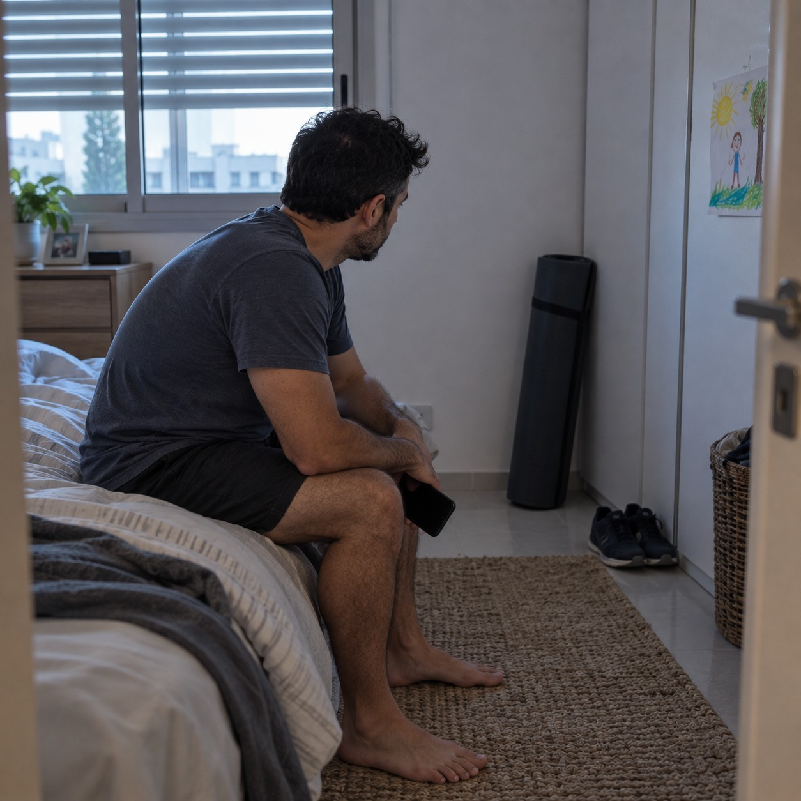
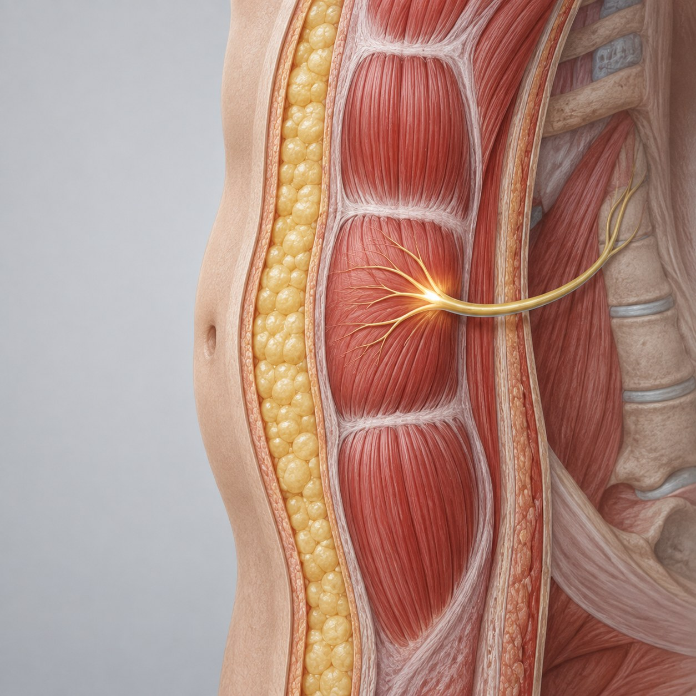
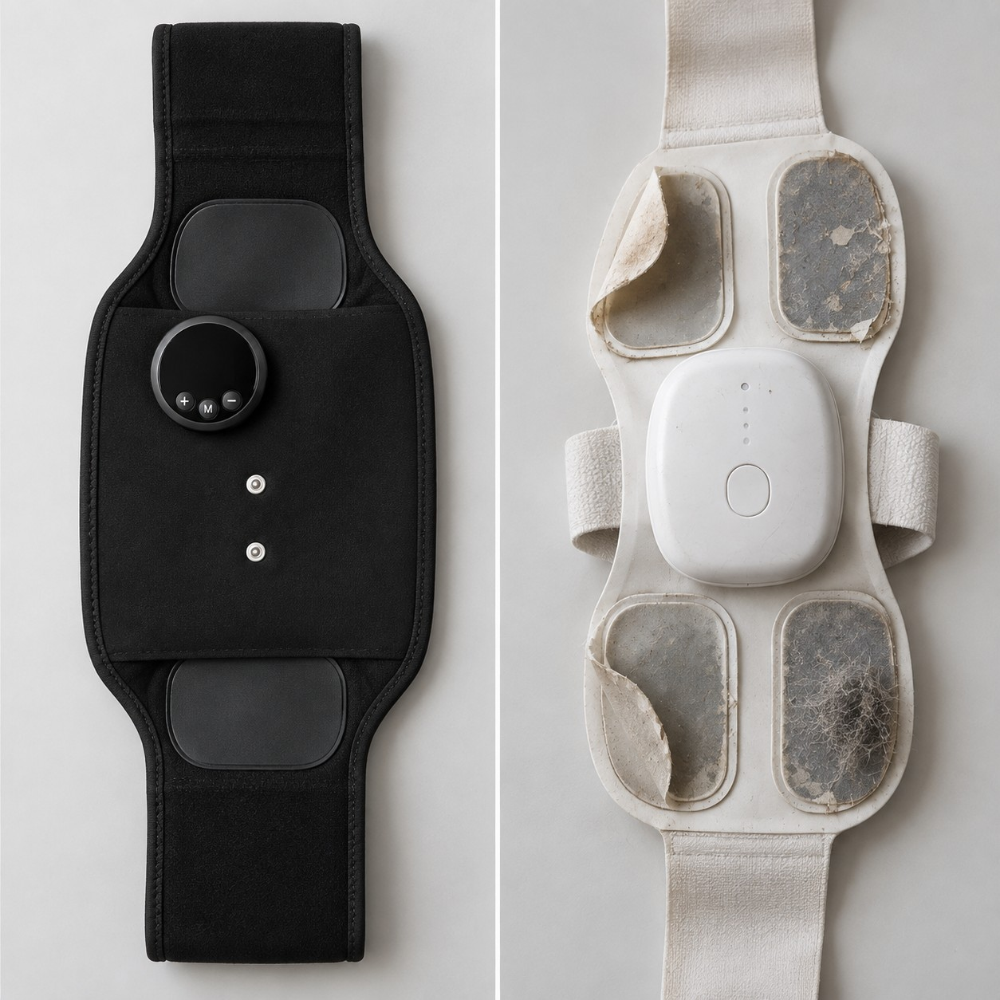
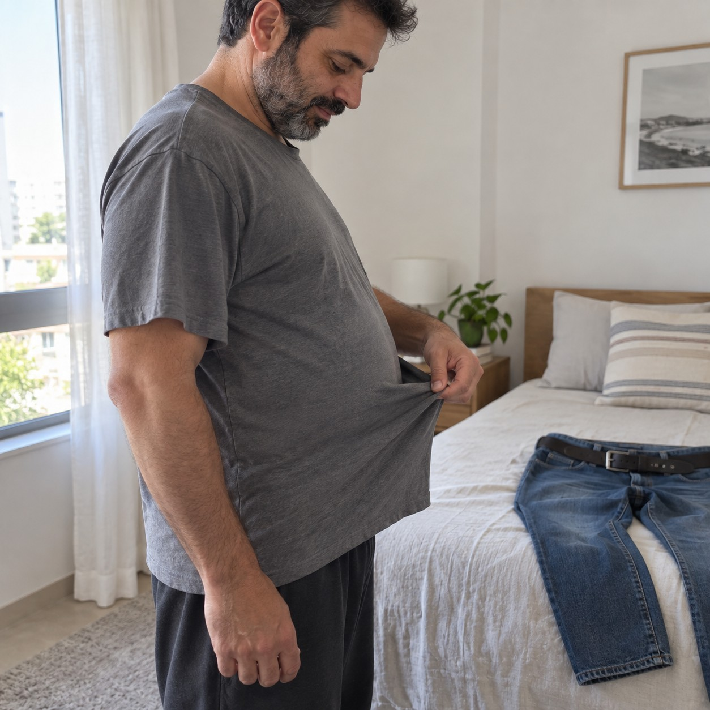

ירדת במשקל ובכל זאת הבטן נשארה? זה כי אף פעם לא אימנת את השריר שמתחתיה
אימון בטן של 20 דקות שקורה בזמן שאתה יושב, ומה מצא מחקר של 8 שבועות על מי שעשה את זה כל יום
אני אגיד את זה ישר.
רוב הגברים שאני מכיר בגיל 35 פלוס ניסו לפחות פעם אחת להיפטר מהבטן. דיאטה, חדר כושר, הליכות, אפליקציה. חלק הצליחו לרדת במשקל.
והבטן נשארה.
זה לא כישלון שלך. זה כישלון של השיטה. כל הדרכים האלה הולכות על שכבת השומן. אף אחת מהן לא נוגעת בקיר השריר שמתחתיה, זה שמחזיק את הבטן פנימה כשהוא חזק, ונותן לה ליפול החוצה כשהוא רפוי.
ואת השריר הזה, בוא נהיה כנים, אף פעם לא אימנת. לא כי לא רצית. כי אימון בטן הוא הדבר הראשון שנופל מסדר היום.
עשר סיבות למה זה משתנה, ומה בדיוק קורה כשמאמנים את השריר הזה עשרים דקות ביום בלי לרדת לרצפה.
ירדת במשקל, והבטן נשארה בדיוק איפה שהייתה

ירדת ארבעה קילו, אולי שישה. המכנסיים קצת יותר רפויים, ובכל זאת, כשאתה עומד מהצד מול המראה, הבטן עדיין שם. זה לא כי לא ירדת מספיק. מתחת לשכבת השומן יש קיר של שריר שמחזיק את כל מה שמעליו, וכשהוא רפוי, הבטן נשענת החוצה. בכל משקל.
הערכה של LyonRise עובדת על השריר הזה בדיוק, לא על השומן שמעליו, כדי שהצורה תשתנה ולא רק המספר.
כל בוקר אתה אומר היום, וזה לא עניין של רצון

אתה יודע בדיוק מה צריך לעשות. עשרים דקות על הרצפה, שלוש פעמים בשבוע. ובכל זאת זה לא קורה. לא כי אתה עצלן, אלא כי אימון בטן הוא הדבר היחיד בסדר היום שלך שאין לו שעה קבועה, מקום קבוע ומישהו שמחכה לך. דברים כאלה תמיד נדחים למחר.
עם LyonRise הסט קורה בזמן שאתה ממילא עושה משהו אחר, ליד השולחן או מול הטלוויזיה, אז אין מה לדחות.
מה EMS עושה בפועל, בלי מילים גדולות

העצב. כאן נכנס הפולסמשמאל לימין: העור, שכבת השומן, ומאחוריה שריר הבטן. הנקודה הזוהרת היא העצב, כאן נכנס הפולס.
כל כיווץ שריר בגוף מתחיל בעצב. המוח שולח פולס חשמלי, העצב מעביר אותו, והשריר מתכווץ. זה מה שקורה בכל כפיפת בטן. EMS שולח את אותו פולס דרך העור ישירות לעצב, והשריר מתכווץ בדיוק כמו באימון, רק שלא אתה מניע אותו. זה לא קיצור דרך. זה הסט שאף פעם לא עשית.
הממריצים של LyonRise שולחים את הפולס דרך אלקטרודות מובנות בחגורה, ב-12 מצבים ו-19 רמות עוצמה שאתה קובע.
600 כיווצים ב-20 דקות, ואתה מרגיש את זה למחרת
אימון בטן ממוצע, אם באמת עשית אותו, מגיע לכמה עשרות כפיפות לפני שהצוואר או הגב מוותרים. הפולס לא מתעייף ולא מוותר. בעשרים דקות השריר מתכווץ ומשתחרר יותר מ-600 פעמים, בקצב קבוע ובעוצמה שבחרת. בבוקר שאחרי אתה מרגיש את זה בדיוק איפה שצריך, בלי צוואר ובלי גב.
ערכת LyonRise בנויה לאימון של 20 דקות, בטן ושתי ידיים, ואפשר להריץ אותו כל יום.
ערכת LyonRise · חגורת בטן + 2 ממריצים לידיים · 45 יום להחזרה
לערכה ב-50% הנחה ←מה קרה ל-24 אנשים שעשו את זה 8 שבועות
במחקר שפורסם ב-2005 בכתב עת לרפואת ספורט, 24 מבוגרים הפעילו EMS על שרירי הבטן חמישה ימים בשבוע במשך שמונה שבועות, בלי שום אימון נוסף. בסוף התקופה היקף המותניים ירד בממוצע ב-3.5 סנטימטר, ו-24 מתוך 24 דיווחו שהבטן מרגישה מוצקה יותר.
זו הטכנולוגיה שבערכת LyonRise, ואתגר 8 השבועות שמצורף אליה בנוי בדיוק על לוח הזמנים הזה.
למה החגורה הזולה מתה אחרי שלושה שבועות

קנית פעם חגורה כזאת בכמה עשרות שקלים. בשבוע הראשון הרגשת משהו, אחר כך פחות, ואז כלום. זה לא היה בראש שלך. חגורות זולות עובדות עם מדבקות ג'ל חד פעמיות. הג'ל מתייבש, המגע עם העור נחלש, והפולס פשוט לא מגיע לשריר. החגורה עוד עובדת. היא רק לא מגיעה אליך.
ב-LyonRise האלקטרודות מובנות בבד עצמו. אין ג'ל שמתייבש ואין מדבקות להחליף, אז העוצמה נשארת אותה עוצמה.
סטודיו EMS גובה סביב 189 שקל ל-20 דקות
אותה טכנולוגיה עובדת היום בסטודיואים לאימוני EMS בכל עיר גדולה בארץ. אימון של עשרים דקות, מאמן, חליפה, ובערך 189 שקל לפעם בחבילה. שלושה אימונים כאלה, ושילמת יותר מהערכה כולה. ועדיין צריך להגיע לשם, להחליף בגדים ולתאם תור.
ערכת LyonRise עולה פחות משלושה אימוני סטודיו, ואתה עושה איתה אימון כל יום, בבית.
ערכת LyonRise · חגורת בטן + 2 ממריצים לידיים · 45 יום להחזרה
לערכה ב-50% הנחה ←זה עובד בזמן שאתה עובד
הבעיה עם כל אימון היא שהוא דורש ממך להפסיק משהו אחר. לנסוע, להחליף בגדים, לפנות שעה. וזה בדיוק מה שאין לך. אבל עשרים דקות שבהן אתה ממילא יושב, בזום, בפקק, מול המשחק, יש בכל יום שלך. השאלה היא רק אם השריר עובד בזמן הזה או לא.
מצמידים את החגורה של LyonRise מתחת לחולצה, בוחרים מצב ועוצמה, וממשיכים ביום. אין ג'ל, אין כבלים, אין מה להחזיק.
בטיפול להרזיה? המשקל יורד, והשריר יורד איתו

יותר ויותר גברים יורדים היום במשקל עם טיפול, זריקות או תוכנית רפואית. וזה עובד. אבל כשהמשקל יורד מהר, הגוף לא לוקח רק שומן. הוא לוקח גם שריר. הקיר שמאחורי הבטן, שהיה רפוי גם קודם, נהיה רפוי עוד יותר. ולכן יש מי שיורד עשרה קילו ומגלה שהצורה לא השתפרה, רק התכווצה.
LyonRise עובדת על השריר הזה בזמן שהמשקל יורד, 20 דקות ביום, כדי שמה שנשאר בסוף יחזיק את עצמו.
איך באמת נראים 8 השבועות הראשונים
בשבוע הראשון אתה בעיקר מרגיש שריר שלא הרגשת שנים, ולמחרת קצת כאבי שרירים. בשבוע השלישי אתה מעלה עוצמה, והבטן מתחילה להרגיש מוצקה יותר כשאתה עומד. השבוע השמיני הוא הטווח שבו המחקר מדד את השינוי בהיקף. לא קוביות. בטן שמחזיקה את עצמה אחרת.
אתגר 8 השבועות מגיע עם הערכה. ואם אחרי 45 יום זה לא בשבילך, מחזירים ומקבלים את הכסף בחזרה.
מה מהאלה נכון לגביך?
סמן עד 6. התוצאה מיד.
סמן לפחות אחד כדי לראות את התוצאה
מה כותבים מי שכבר קנו
עומר ל.ביקורת מאומתת
כבר קניתי ממריצי שרירים זולים שכמעט לא הרגשתי מהם כלום, אז הייתי סקפטי. כאן התחושה הרבה יותר נשלטת, הכיווצים ברורים, וזה סוף סוף מרגיש כמו משהו שאוכל להשתמש בו לאורך זמן.
נועם ר.ביקורת מאומתת
אני הורה עובד, ובכל ערב הייתי אומר לעצמי שאעשה תרגילי בטן ואז לא מגיע לזה. עכשיו אני שם את החגורה בזמן שאני מסדר בבית או צופה בטלוויזיה, בוחר עוצמה ומסיים 20 דקות בלי לשנות את כל הערב.
גדי ק.ביקורת מאומתת
גם כשהמשקל ירד, הבטן עדיין הייתה האזור שהכי הפריע לי. דרך פשוטה של 20 דקות לעבוד על שרירי הליבה מאפשרת לי סוף סוף להתמיד בלי להוסיף עוד אימון מלא.
שמעון ק.ביקורת מאומתת
העלות של אימונים אישיים או מפגשים מקצועיים כמה פעמים בשבוע פשוט לא הייתה מציאותית עבורי. רציתי אפשרות ביתית לשימוש מתי שנוח לי, וזה בדיוק מה שמצאתי.
ערכת החיטוב והמיצוק של LyonRise

- ממריץ לבטן
- 2 ממריצים לידיים
- כבל טעינה ומדריך התחלה מהירה
- קופסת מתנה
המבצע מסתיים הלילה בחצות
00:00:00
להזמנה · 45 יום להחזרה ←משלוח חינם · תשלום מאובטח · החזר כספי מלא תוך 45 יום · FDA Cleared
שאלות שכולם שואלים
זה כואב?
לא. מרגישים את השריר מתכווץ ומשתחרר, בהתחלה זה מוזר ואחרי כמה פעמים זה טבעי. מתחילים בעוצמה נמוכה ועולים. למחרת יכולים להיות כאבי שרירים קלים, כמו אחרי אימון.
כמה זמן עד שרואים משהו?
מרגישים את השריר כבר באימון הראשון. שינוי שרואים לוקח שבועות, לא ימים. המחקר מדד את השינוי בהיקף אחרי 8 שבועות של שימוש יומיומי, ולכן הערכה מגיעה עם אתגר 8 שבועות.
אפשר כל יום?
כן. אימון של 20 דקות ביום. מי שרוצה יכול לפצל, בטן ביום אחד וידיים ביום אחר.
למי זה לא מתאים?
לא משתמשים ב-EMS עם קוצב לב או מכשיר רפואי מושתל, בהריון, או עם בעיה לבבית ידועה. אם יש ספק, שאל רופא לפני.
מה ההבדל מהחגורות הזולות?
אלקטרודות מובנות בבד במקום מדבקות ג'ל. אין מה להחליף, ואין ג'ל שמתייבש ומחליש את הפולס אחרי כמה שבועות.
ואם זה לא בשבילי?
45 יום מיום הקבלה. מחזירים ומקבלים את הכסף בחזרה.
השריר שמתחת לבטן לא יתאמן לבד
20 דקות ביום, בזמן שאתה ממילא יושב. 45 יום לבדוק אם זה בשבילך.
לערכה ב-50% הנחה ←